课程实战五套（可动 demo） Skill/ppt + Projects/awc-*_20261110
五套已完整落地的课程 deck（HTML slides），下面是实时渲染的首页缩略，点击可打开完整 deck 翻页体验。对应 PPTX 工程在 Projects/awc-*_20261110/。
「做 PPT」→ ppt skill 默认出 3 个方向初稿供选定；可直接点名这五套之一HTML Slides 预设 × 12 Skill/ppt/STYLE_PRESETS.md
ppt skill 的官方命名预设，12 套全部有可翻页 demo：5 套是真实课程 deck（同上方五套），7 套为画廊自建的标本 deck（同一「AI 写作产线」内容骨架，方便同内容对比风格）。
Phase 2 走 HTML 路线时从 12 套中挑 3 套出方向初稿，Gate A 选定风格复刻实战 × 4 逆向自真实世界 deck 截图像素级取色（冯若航清华软件论坛分享 · Ted Xiao Humanoid Hub 演讲 · 崔牛会重构大会演讲）
看到别人的好 deck 就拆下来：从幻灯片截图逐像素取样色值与版式，复刻成可翻页 HTML demo + 原生可编辑 PPTX 模板。白底学术（Vonng OPC）、暗夜数据 keynote（Ted Xiao Dark，英文 + 中文两套）、白底大会像素风（Rebuild Pixel），各自适合什么、版式怎么映射、如何在同一风格下加页，都有使用指南。
做 PPT 时点名「Vonng OPC」「Ted Xiao Dark」「Rebuild Pixel」风格；可编辑 PPTX 模板见 ppt_demos/ 同名文件；适用场合与拓展规则见 Skill/ppt/references/replica-styles.md原生 PPTX 视觉风格 × 18 Skill/ppt-master/references/visual-styles
原生 PPTX 路线的风格 catalog：只定形状语言 / 装饰密度 / 字体性格 / 质感，不含固定色值。缩略图是按各风格规则绘制的示意草图（非真实 deck 截图），仅表达画布深浅、强调色与版面语言。
生成 PPTX 时把 visual_style 设为对应 id；色板由 design_spec.colors 决定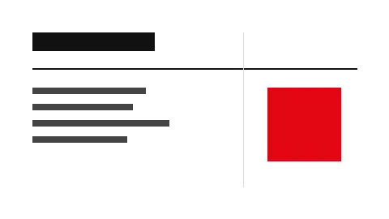


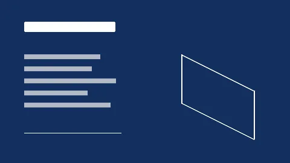
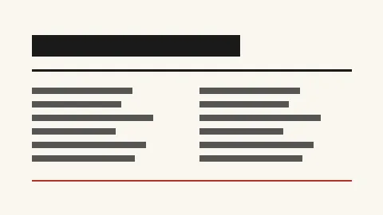
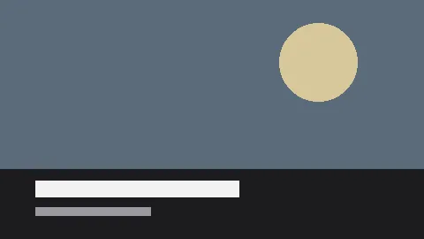
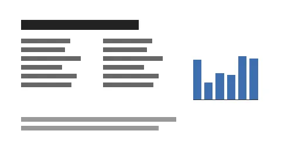
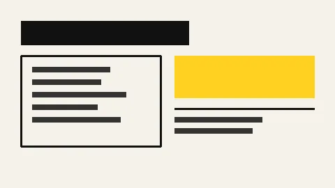
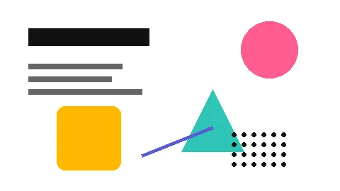
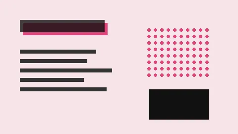
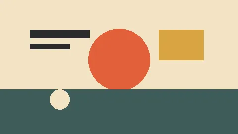
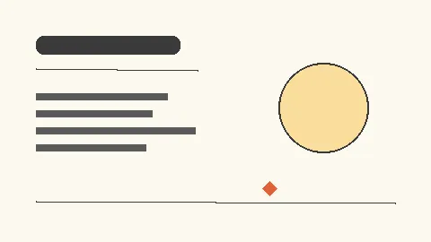
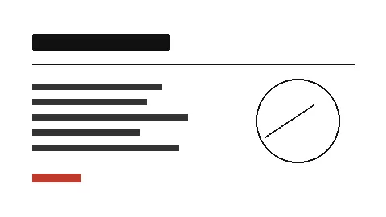
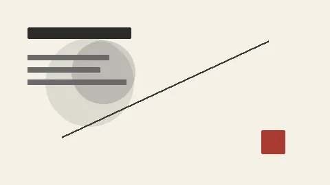
原生 PPTX 风格模板 × 15 Skill/ppt-master/templates/styles
ppt-master 的可复用沟通方法库：论证流 / 页面角色词汇 / 证据纪律 / 视觉与图像默认。与上方视觉风格 catalog 互补——视觉风格定「长什么样」，这里定「怎么讲 + 默认视觉倾向」。缩略图为示意草图。新增风格模板注册进 styles_index.json 后重建画廊即自动进本节。
生成 PPTX 时 Stage 1 选模板模式并指定该 workspace 根路径；或对话中直接点名风格 id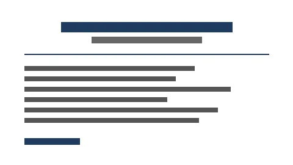
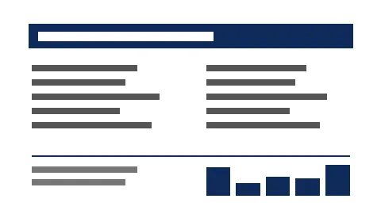
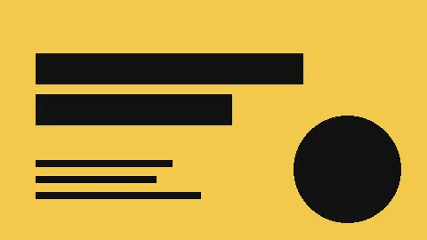
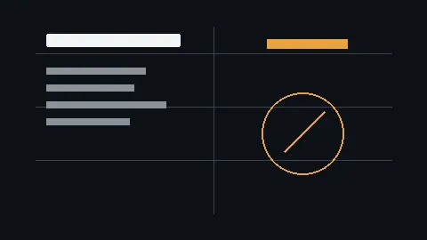
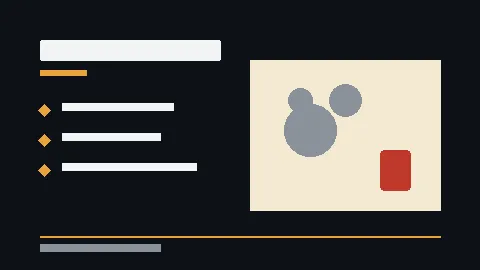
打开 demo ↗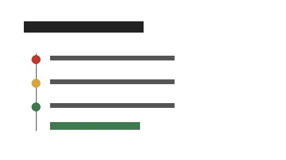
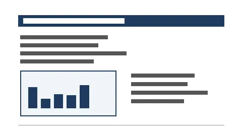
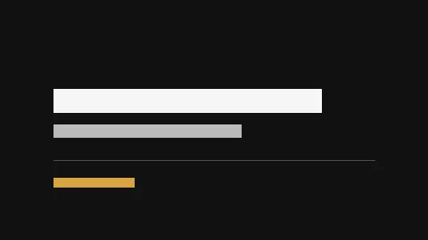
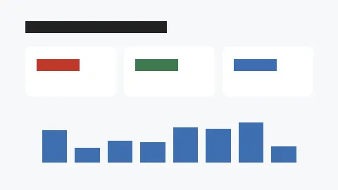
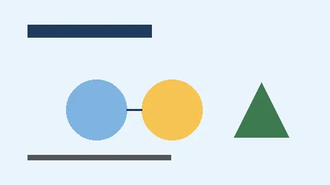
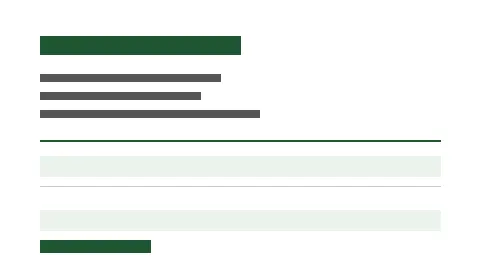
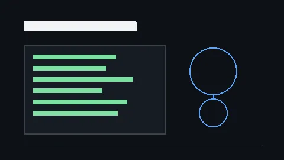